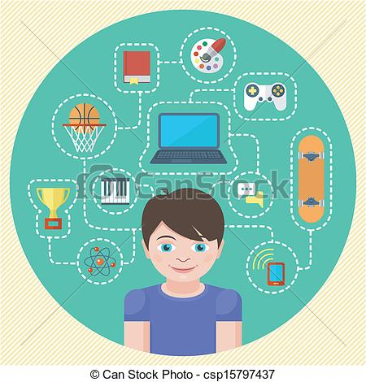

Jag har såklart fler intressen än vad som får plats på den här sidan, så jag ska berätta om mina käraste intressen. Jag gillar att spela datorspel, för stunden finns det inget speciellt spel man jag har spelat spel som League of Legends och Counter Strike. Jag gillar även sporter som innebandy och fotboll, men spelar inte sporterna aktivt längre. Tycker även om programmering och andra teknik aktiga ämnen.
